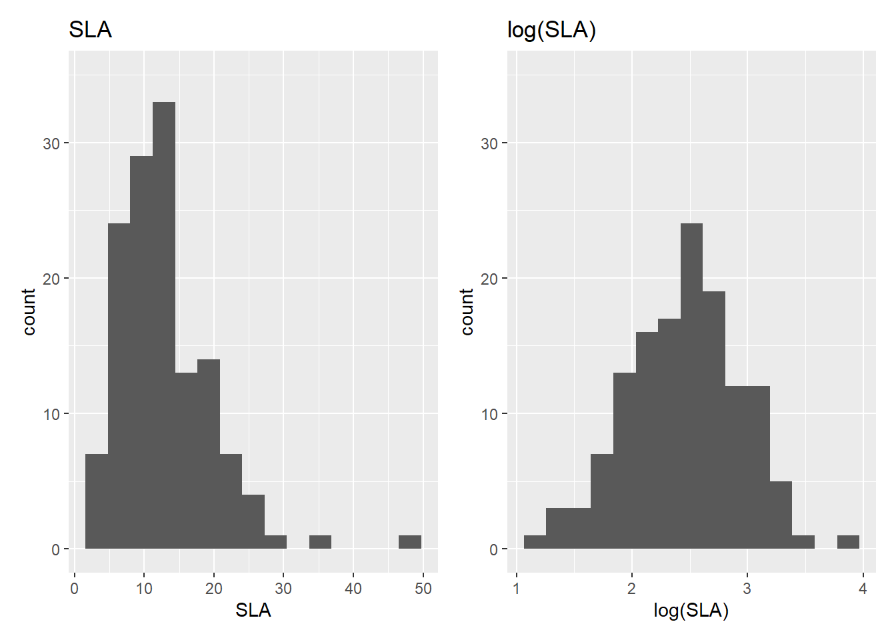
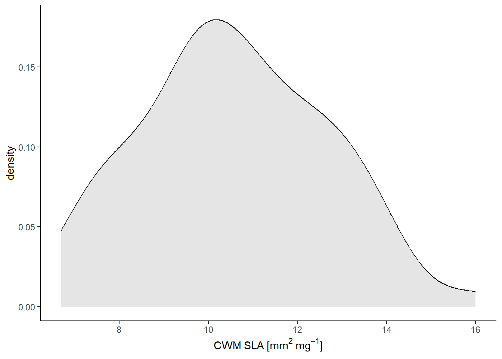
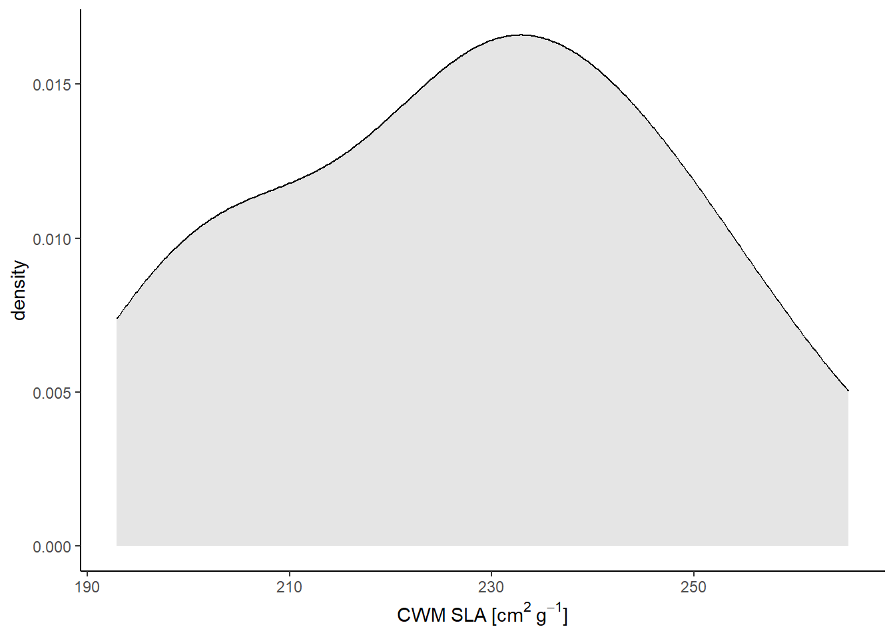
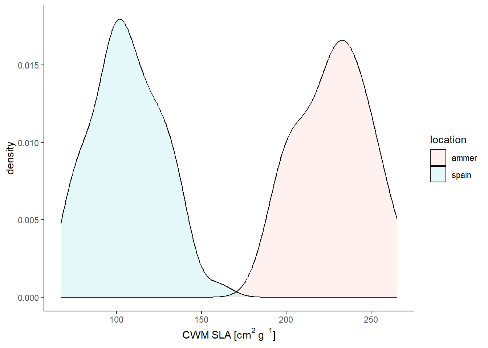

library(here)
library(tidyverse)
library(FD)
rm(list = ls())Analysis of Ecological Data
Community Weighted Mean (CWM)
Technichal University of Munich, TUM School of Life Sciences, Chair of Restoration Ecology, Emil-Ramann-Straße 6, 85354 Freising, Germany
 https://orcid.org/0000-0001-5372-4174
https://orcid.org/0000-0001-5372-4174


This tutorial uses Bello et al. (2021)
1 Preparation
We studied trait dissimilarity among species and now we have a look at trait dissimilarity among communities. In this exercise we will learn how to compute one important index of community trait structure, i.e. Community Weighted Mean (CWM). This exercise follows the first part of Chapter 5 of the reference textbook, so all theoretical and mathematical issues beyond the indices described in this exercise can be found there.
Load the libraries. The FD package is of (Laliberté & Legendre 2010)
1.1 The example data sets
1.1.1 Spain data
We will work with first invented data, as used in the Chapter (specially Fig.5.2, with data created below), as well as data available in the help of the function functcomp. Then field data from an climatic gradient in NE Spain will be used.
In the NE Spain data, 5 vegetation belts along a climatic and altitudinal gradients were sampled. The data is based on two publications de Bello et al. (2006; 2009). The gradient characterized by the 5 vegetation belts is going from a shrubland in Monegros, in the Aragon region (basically a desert with rainfall around 320 mm per year and altitude around 200 m a.s.l) to a subalpine meadow in the Catalan Pirinees (rainfall slightly below 1000 mm per year and altitude around 2000 m a.s.l). We characterized each belt by a moisture index, which is rainfall divided by potential evapotranspiration (just google UNEP aridity index). In each vegetation belt a total of 12 plots were surveyed (10x10m plots divided into 100 1m2 quadrats). Thus for each plot species frequency over the 100 quadrats is given in the “speciesXplotsNE.txt” file (notice that in the file species are rows and plots are columns, while some authors and R function prefer the data in a transposed form, with species information using columns and plots using rows; we will start with this format, shown in Chapter 5 and explain why in some cases it is better to transpose the data). Out of the 12 plots per vegetation belt, 4 had high grazing pressure, 4 intermediate and in 4 grazing was abandoned. Information about plot location along the 5 vegetation belts are included in the file “environXplotsNE.txt” (column “vegbelt”, 1 is the driest and lowest vegetation belt, 5 is the highest and wettest vegetation belt, see also “moisture index”; in column “grazing” 0=abandonment, 1=intermediate grazing, 2=intensive grazing). Traits information is included in “speciesXtraitsNE.text”, similar to the data used in Chapter 3, see further below.
1.1.2 Ammer data
A study in the Ammer valley before and after the weir in the floodplain Schnalz.
Normally there are alluvial grey alder forests (Alnetum incanae, alliance Alnion incanae, EUNIS habitat T12)
Due to the dam along the Ammer and the weir in the Ammer the flood regime changed and the vegetation could have developed to a maple-ash forest (‘Edellaubholzwald’) (Adoxo-Aceretum, alliance Tilio-Acerion, EUNIS habitat type T1F)
1.2 Load data
comm1 <- c(10, 10, 10, 10, 10, 0, 0)
comm2 <- c(49, 0, 5, 0, 5, 0, 11)
comm3 <- c(0, 6, 0, 4, 0, 2, 8)
names <- paste("species", 1:7)
species_invented <- tibble(names, comm1, comm2, comm3)
bodysize <- c(10, 20, 30, 40, 50, NA, 70)
carnivory <- c(1, 1, 0, 1, 0, 1, 0)
traits_invented <- tibble(names, bodysize, carnivory)
species_spain <- read_delim(
here::here("data", "raw", "bello_etal-2021", "chapter5", "speciesXplotsNE.txt"),
col_names = TRUE, delim = "\t", col_types = cols(.default = "?")
)
traits_spain <- read_delim(
here::here("data", "raw", "bello_etal-2021", "chapter5", "speciesXtraitsNE.txt"),
col_names = TRUE, delim = "\t", col_types = cols(.default = "?")
)
sites_spain <- read_delim(
here::here("data", "raw", "bello_etal-2021", "chapter5", "environXplotsNE.txt"),
col_names = TRUE, delim = "\t", col_types = cols(.default = "?")
)
species_ammer <- read_csv(
here("data", "processed", "data_processed_species_ammer.csv"),
col_names = TRUE, col_types = cols(
.default = "?",
accepted_name = "f"
)
)
traits_ammer <- read_csv(
here("data", "processed", "data_processed_traits_ammer.csv"),
col_names = TRUE, col_types = cols(.default = "?")
)
sites_ammer <- read_csv(
here("data", "raw", "example_course_alluvial_forest_mb", "data_raw_sites.csv"),
col_names = TRUE, col_types = cols(.default = "?")
)2 Calculation of CWM
2.1 Invented data
2.1.1 Preparation
Let’s look at an invented ‘species x community’ matrix and then a ‘species x traits’ matrix. Notice that we will start computing everything by hand, to learn the overall process, although existing functions in R can be used instead much more simply (see later in the section).
species_invented# A tibble: 7 × 4
names comm1 comm2 comm3
<chr> <dbl> <dbl> <dbl>
1 species 1 10 49 0
2 species 2 10 0 6
3 species 3 10 5 0
4 species 4 10 0 4
5 species 5 10 5 0
6 species 6 0 0 2
7 species 7 0 11 8traits_invented# A tibble: 7 × 3
names bodysize carnivory
<chr> <dbl> <dbl>
1 species 1 10 1
2 species 2 20 1
3 species 3 30 0
4 species 4 40 1
5 species 5 50 0
6 species 6 NA 1
7 species 7 70 0As you can see this data reflects an hypothetical case of a dataset with a total of 3 communities, containing a total of 7 species, for which we have data for 2 traits, body size and whether species are carnivourous (1 = yes) or not (0 = no). Species 6 has missing data for body size.
To compute CWM we first need the relative abundance of the species in each community. For this we need first to compute the total abundance in each community for example as:
totalabb <- species_invented %>%
summarize(across(where(is.numeric), ~ sum(.x, na.rm = TRUE)))
totalabb# A tibble: 1 × 3
comm1 comm2 comm3
<dbl> <dbl> <dbl>
1 50 70 20Then, we need to divide the abundance of each species in each plot by the total abundance of the plot. In R it could be done as following (notice also that the sum of the relative abundances within a plot should be equal to 1, as we show):
sp.rel.abb <- species_invented %>%
mutate(
across(where(is.numeric), ~ ./ sum(., na.rm = FALSE)),
comm2 = round(comm2, digits = 3)
)
sp.rel.abb# A tibble: 7 × 4
names comm1 comm2 comm3
<chr> <dbl> <dbl> <dbl>
1 species 1 0.2 0.7 0
2 species 2 0.2 0 0.3
3 species 3 0.2 0.071 0
4 species 4 0.2 0 0.2
5 species 5 0.2 0.071 0
6 species 6 0 0 0.1
7 species 7 0 0.157 0.4sp.rel.abb %>%
summarize(across(where(is.numeric), ~ sum(.x, na.rm = TRUE)))# A tibble: 1 × 3
comm1 comm2 comm3
<dbl> <dbl> <dbl>
1 1 0.999 1The presence of a missing value (NA) in the trait matrix will create some problems. In particular, species 6 is present in community 3, with a relative abundance of 0.1 (i.e. 10%). Because we do not have data about body size for this species, we need to remove the species from community 3 and compute new relative abundances (because the sum of relative abundance still needs to be sum 1). To do this, for example, we can:
species_invented.nosp6 <- species_invented %>% #create a copy of the species x community matrix
mutate(comm3 = if_else(names == "species 6", 0, comm3))
sp.rel.abb.nosp6 <- species_invented.nosp6 %>%
mutate(
across(where(is.numeric), ~ ./ sum(., na.rm = TRUE)),
across(where(is.numeric), ~ round(., digits = 3))
)
sp.rel.abb.nosp6# A tibble: 7 × 4
names comm1 comm2 comm3
<chr> <dbl> <dbl> <dbl>
1 species 1 0.2 0.7 0
2 species 2 0.2 0 0.333
3 species 3 0.2 0.071 0
4 species 4 0.2 0 0.222
5 species 5 0.2 0.071 0
6 species 6 0 0 0
7 species 7 0 0.157 0.444As you can see the relative abundances in community 3 have slightly changed. This means now that, in principle, for each trait we should use a different plot composition data which is of course complicated. Notice that we could have also removed the species from the whole matrix, for example by doing species_invented %>% filter(!(names == "species 6")) but this would have made the ‘species x community’ matrix smaller than the ‘species x traits’ matrix, which is definitely NOT a good way forward. For example in this case the species has other traits information so that we can still use it for computing trait dissimilarity and therefore functional diversity. In some cases, indeed it might be quicker to remove the species from all matrices, see below.
2.1.2 Calculation by hand
We can now compute the CWM for the two traits. For carnivory, where we do not have NAs, we can use the full data, with all species (‘sp.rel.abb’), while for body size we need the version of the plot data without species 6 (‘sp.rel.abb.nosp6’). The CWM is computed, for each plot (community), by 1) multiplying the trait values by species relative abundance and 2) summing the resulting values. This is done in the following way, first for carnivory:
sp.rel.abb.car <- sp.rel.abb %>%
mutate(across(where(is.numeric), ~ .x * traits_invented$carnivory))
sp.rel.abb.car# A tibble: 7 × 4
names comm1 comm2 comm3
<chr> <dbl> <dbl> <dbl>
1 species 1 0.2 0.7 0
2 species 2 0.2 0 0.3
3 species 3 0 0 0
4 species 4 0.2 0 0.2
5 species 5 0 0 0
6 species 6 0 0 0.1
7 species 7 0 0 0 sp.rel.abb.car %>%
summarize(across(where(is.numeric), ~ sum(.x, na.rm = TRUE)))# A tibble: 1 × 3
comm1 comm2 comm3
<dbl> <dbl> <dbl>
1 0.6 0.7 0.6This means that in comm1 and comm3, a 60% of the total abundance is composed by carnivourous organisms. In comm2, it is 70%.
Before we continue, a word of caution. Here, and below, notice that we use the expression “60% of the total abundance is composed by carnivorous organisms” and NOT “species”. This is because, using relative abundance, the CWM indicates which proportion of the total abundance in a plot is composed by organisms of a given type, for example how many individuals in the comm1 are carnivorous, irrespectively of the proportion of species. Of course, in comm1 all species have the same abundance (10 for all species, so that in that case we can say that 60% of the species are carnivorous). But in comm2 the abundance is quite uneven across species, so that 70% indicates the proportion of organisms, and not species, that in the plot are carnivorous.
Having said so, we can compute the same for body size:
sp.rel.abb.bod <- sp.rel.abb.nosp6 %>%
mutate(across(where(is.numeric), ~ .x * traits_invented$bodysize))
sp.rel.abb.bod# A tibble: 7 × 4
names comm1 comm2 comm3
<chr> <dbl> <dbl> <dbl>
1 species 1 2 7 0
2 species 2 4 0 6.66
3 species 3 6 2.13 0
4 species 4 8 0 8.88
5 species 5 10 3.55 0
6 species 6 NA NA NA
7 species 7 0 11.0 31.1 sp.rel.abb.bod %>%
summarize(across(where(is.numeric), ~ sum(.x, na.rm = TRUE)))# A tibble: 1 × 3
comm1 comm2 comm3
<dbl> <dbl> <dbl>
1 30 23.7 46.6Which means that the weighted average of body size is the biggest in comm3 and the smallest in comm2.
2.1.3 Calculation with the FD package
Of course you do not need to compute CWM always by hand! There are existing functions (such as dbFD in the package FD) that does all the things we did above directly for you. This was simply an example to show the functioning of the underlying processes. We can get (basically) the same results (but see below) by doing the following. However, the function needs a ‘species x traits’ matrix (more specifically a data.frame or tibble), as first argument, and as second argument we need to provide the ‘species x community’ matrix, which has a form where species are columns and plots as rows (that is why we needed to transpose it!).
species_invented_2 <- species_invented %>%
pivot_longer(-names) %>%
pivot_wider(names_from = names, values_from = value) %>%
column_to_rownames(var = "name")
traits_invented_2 <- traits_invented %>%
column_to_rownames(var = "names")Calculate the CWM:
data <- FD::dbFD(
traits_invented_2, species_invented_2,
calc.CWM = TRUE, w.abun = TRUE,
calc.FRic = FALSE, calc.FDiv = FALSE, corr = "none"
)Warning in is.euclid(x.dist): Zero distance(s)
Warning in is.euclid(x.dist): Zero distance(s)Warning in is.euclid(distmat): Zero distance(s)Species x species distance was not Euclidean, but no correction was applied. Only the PCoA axes with positive eigenvalues were kept. data$CWM %>%
select(bodysize, carnivory) bodysize carnivory
comm1 30.00000 1
comm2 23.71429 1
comm3 46.66667 1As you see in the script above, the function dbFD does all the steps we did above, by ‘hand’, in almost one line. How convenient! It is important to notice that both matrices need to be of the same size (i.e. same number of species) and that the species names should be EXACTLY the same in both, even the same order. This is very often a problem we find when we are working with students. So be careful! We suggest checking these things before doing the calculations:
species_invented %>%
anti_join(traits_invented, by = "names")# A tibble: 0 × 4
# ℹ 4 variables: names <chr>, comm1 <dbl>, comm2 <dbl>, comm3 <dbl>traits_invented %>%
anti_join(species_invented, by = "names")# A tibble: 0 × 3
# ℹ 3 variables: names <chr>, bodysize <dbl>, carnivory <dbl>species_invented <- species_invented %>%
arrange(names)
traits_invented <- traits_invented %>%
arrange(names)Notice also that in the results we obtained above there is something apparently strange! they are not the same we got by hand, so far. Specifically, we got the same results obtained above for body size, but not for carnivory. For this trait, using the function dbFD we got, as a result, the value 1 for all 3 plots. What does this mean? This apparently counterintuitive result is simply because the function ‘dbFD’, in the case of these binary traits, or any categorial trait, does not compute by default the CWM, but it rather tells us what is the most dominant type in each plot. In practice the function tells us that in all the 3 plots considered, the dominant type is ‘carnivorous’ (remember that in all communities there was more than 50% of carnivorous organisms). To obtain the proportion of each type, which is what we computed above using, we can just include CWM.type = "all":
data <- FD::dbFD(
traits_invented_2, species_invented_2,
calc.CWM = TRUE, w.abun = TRUE, CWM.type = "all",
calc.FRic = FALSE, calc.FDiv = FALSE, corr = "none"
)Warning in is.euclid(x.dist): Zero distance(s)
Warning in is.euclid(x.dist): Zero distance(s)Warning in is.euclid(distmat): Zero distance(s)Species x species distance was not Euclidean, but no correction was applied. Only the PCoA axes with positive eigenvalues were kept. data$CWM %>%
select(bodysize, starts_with("carnivory")) bodysize carnivory_0 carnivory_1
comm1 30.00000 0.4 0.6
comm2 23.71429 0.3 0.7
comm3 46.66667 0.4 0.6With the argument CWM.type = "all" The function dbFD now gives us the CWM for both carnivourous and non-carnivorous categories. This shows that in the first community is composed by a total of 40% non-carnivorous organisms, and consequently, a 60% of carnivorous organisms. Obvioulsy one would expect that the sum of these two values would be 1, so that the columns ‘carnivory_0’ and ‘carnivory_1’ are “complementary”. This is the case in this example, and it should be always like that! But….sometimes ‘dbFD’ gets into troubles in the presence of NAs.
With quantitative traits the dbFD function removes the species for which traits are missing, i.e. with NA. For binary and categorical traits, this is not done. So, in summary, when you have missing values in some binary of categorical traits the function dbFD does different things. Luckily, categorical traits are generally more easily available and there will be less NAs. But please do not forget that there is an issue.
2.2 Spain data
2.2.1 Preparation
Let’s now use real data and let’s start with the NE Spain data described above. Let’s first check the dimension of the objects and if the species names are the same in the plot composition data and in the trait data:
rm(list = setdiff(ls(), c("species_ammer", "species_spain", "traits_ammer", "traits_spain", "sites_spain", "sites_ammer")))
dim(species_spain)[1] 134 61dim(traits_spain)[1] 134 11table(rownames(species_spain) == rownames(traits_spain))
TRUE
134 Let’s also now have a look at the data. This is a glimpse at the ‘species x plot matrix’, for example the first 6 species in the 5th vegetation belt, i.e. the last 12 columns in the matrix. You will see that there are a lot of zero, as species from one vegetation belt are not in all vegetation belts.
species_spain %>%
glimpse()Let’s also now have a look at the trait data. Again, only the first 6 species for simplicity:
traits_spain %>%
head()You can now see what type of trait information we have at hand. First we have one categorical trait “GrowthForm”, with 4 levels (grass, forb, i.e. herbs that are non grasses and subshrubs, small shrubs like thyme, shrub, including small trees). We then have data on whether the species are legumes (“LEG”), which is a binary 0/1 trait, and the specific leaf area (“SLA”) which is quantitative. We then have a trait, which is Life Form (“LF_”), which is introduced as a dummy variable, with fuzzy coding. This mean that the different life forms categories, generally following Raunkiaer scheme, are represented by a different column (this includes Th=Therophytes, G=Geophytes, H=Hemicryptophytes, Ch=Chamaephytes, here divided in herbaceuous “h” and woody “w”, NP=nano-Phanerophytes and P=Phanerophytes). Please see the link above for a detailed description of these groups. Each species can be part of different groups, althouh most of the times each species is only in one group. For example Acercamp, i.e. Acer campestris, i.e. a Phanerophytes, so it has the value 1 in this category. On the other hand some species, such as Achimill, Achillea millefolium, can be both an Hemicryptophytes and a Chamaephytes. In this case, we assign 0.5 in each column. Notice that the total value per species, for the LF trait has to sum up to 1 (see the Chapter 3 and 5 in the reference book for further explanations). We use the tabyl function (Vignette) of the janitor package (Vignette; Firke et al. 2023).
traits_spain %>%
select(starts_with("LF_")) %>%
mutate(rowsum = rowSums(.)) %>%
janitor::tabyl(rowsum) rowsum n percent
1 134 1We can also check if all quantitative traits are more or less normally distributed and if a log transformation would help improve normality
library(patchwork)
p1 <- traits_spain %>%
ggplot(aes(x = SLA)) +
geom_histogram(bins = 15) +
scale_y_continuous(limits = c(0, 35)) +
labs(title = "SLA")
p2 <- traits_spain %>%
ggplot(aes(x = log(SLA))) +
geom_histogram(bins = 15) +
scale_y_continuous(limits = c(0, 35)) +
labs(title = "log(SLA)")
p1 + p2
Hence is better to log-transform the SLA data, for example in the following way (but be careful to run the following line only once!)
traits <- traits_spain %>%
mutate(SLA_log = log(SLA)) %>%
column_to_rownames(var = "species")Alternatively you can create a new variable.
We are now ready to compute CWM. We have no NAs so our life will be very easy. Notice that, in this case we decided to log transform the abundance data, to decrease the importance of more dominant species (using \(log(x+1)\) on the species x community matrix). The results shown below are basically the same with and without such a transformation (you can try), but we show it below just to demonstrate how such transformation of data can be applied.
2.2.2 Calculation
species <- species_spain %>%
pivot_longer(-species, names_to = "plot", values_to = "value") %>%
mutate(value = log(value + 1)) %>%
pivot_wider(names_from = "species", values_from = "value") %>%
column_to_rownames(var = "plot")
resCWM <- dbFD(traits, species, CWM.type = "all", w.abun = TRUE, corr = "sqrt")Warning in is.euclid(x.dist): Zero distance(s)
Warning in is.euclid(x.dist): Zero distance(s)Warning in is.euclid(x.dist2): Zero distance(s)
Warning in is.euclid(x.dist2): Zero distance(s)Species x species distance matrix was not Euclidean. 'sqrt' correction was applied.
FRic: Dimensionality reduction was required. The last 106 PCoA axes (out of 113 in total) were removed. Warning in is.euclid(x.dist): Zero distance(s)Warning in is.euclid(x.dist): Zero distance(s)FRic: Quality of the reduced-space representation (based on corrected distance matrix) = 0.8440217 Warning in is.euclid(x.dist): Zero distance(s)resCWM %>%
str()List of 9
$ nbsp : Named int [1:60] 17 22 19 20 21 19 18 18 21 18 ...
..- attr(*, "names")= chr [1:60] "1nograz.1" "1nograz.2" "1nograz.3" "1nograz.4" ...
$ sing.sp : Named num [1:60] 17 22 18 20 21 19 18 18 21 18 ...
..- attr(*, "names")= chr [1:60] "1nograz.1" "1nograz.2" "1nograz.3" "1nograz.4" ...
$ FRic : Named num [1:60] 1.50e-07 3.88e-07 2.60e-07 2.19e-07 4.94e-07 ...
..- attr(*, "names")= chr [1:60] "1nograz.1" "1nograz.2" "1nograz.3" "1nograz.4" ...
$ qual.FRic: num 0.844
$ FEve : Named num [1:60] 0.787 0.747 0.661 0.668 0.685 ...
..- attr(*, "names")= chr [1:60] "1nograz.1" "1nograz.2" "1nograz.3" "1nograz.4" ...
$ FDiv : Named num [1:60] 0.851 0.901 0.889 0.891 0.901 ...
..- attr(*, "names")= chr [1:60] "1nograz.1" "1nograz.2" "1nograz.3" "1nograz.4" ...
$ FDis : Named num [1:60] 0.171 0.179 0.186 0.18 0.186 ...
..- attr(*, "names")= chr [1:60] "1nograz.1" "1nograz.2" "1nograz.3" "1nograz.4" ...
$ RaoQ : Named num [1:60] 0.0314 0.0333 0.0359 0.0338 0.0357 ...
..- attr(*, "names")= chr [1:60] "1nograz.1" "1nograz.2" "1nograz.3" "1nograz.4" ...
$ CWM :'data.frame': 60 obs. of 15 variables:
..$ GrowhtForm_forb : num [1:60] 0.174 0.227 0.142 0.149 0.238 ...
..$ GrowhtForm_grass : num [1:60] 0.0749 0.0855 0.136 0.1154 0.0661 ...
..$ GrowhtForm_shrub : num [1:60] 0.58 0.507 0.462 0.494 0.422 ...
..$ GrowhtForm_subshrub: num [1:60] 0.17 0.181 0.26 0.242 0.274 ...
..$ LEG_0 : num [1:60] 0.956 0.95 0.878 0.932 0.913 ...
..$ LEG_1 : num [1:60] 0.0442 0.0498 0.1224 0.0676 0.087 ...
..$ SLA : num [1:60] 8.86 9.17 7.9 7.85 8.69 ...
..$ LF_Th : num [1:60] 0 0 0 0 0 ...
..$ LF_G : num [1:60] 0 0 0 0 0 0 0 0 0 0 ...
..$ LF_H : num [1:60] 0.172 0.175 0.174 0.154 0.132 ...
..$ LF_hCh : num [1:60] 0.0773 0.0781 0.0603 0.0536 0.1044 ...
..$ LF_wCh : num [1:60] 0.138 0.207 0.304 0.298 0.306 ...
..$ LF_NP : num [1:60] 0.326 0.305 0.331 0.346 0.261 ...
..$ LF_P : num [1:60] 0.287 0.235 0.131 0.147 0.196 ...
..$ SLA_log : num [1:60] 2.09 2.12 1.98 1.96 2.07 ...WELL DONE! we now have the CWM data.
2.2.3 Plotting and saving
Merge the CWMs in the sites data
data <- data.frame(resCWM$FDis, resCWM$CWM$SLA_log) %>%
rownames_to_column("id.plot") %>%
rename(
"cwm.abu.sla" = "resCWM.CWM.SLA_log"
) %>%
mutate(
across(where(is.numeric), ~ exp(.x)), # backtransform traits
across(where(is.numeric), ~ round(.x, digits = 2)) # round outcomes
) %>%
select(id.plot, cwm.abu.sla)
sla <- data
sites_spain <- sites_spain %>%
rename(id.plot = Plots) %>%
left_join(sla, by = "id.plot")Plot the CWMs of SLA
sites_spain %>%
ggplot(aes(x = cwm.abu.sla)) +
geom_density(color = "black", fill = "black", alpha = .1) +
labs(x = expression(CWM~SLA~"["*mm^2~mg^-1*"]")) +
theme(
axis.line = element_line(color = "black"),
panel.background = element_rect(fill = "transparent")
)
Save the new sites data
write_csv(
sites_spain, here::here("data", "processed", "data_processed_sites_spain")
)2.3 Ammer data
2.3.1 Preparation
rm(list = setdiff(ls(), c("species_ammer", "species_spain", "traits_ammer", "traits_spain", "sites_spain", "sites_ammer")))
data_traits <- traits_ammer %>%
select(accepted_name, sla_mean, growth_form_2) %>%
filter(!is.na(sla_mean) & !(growth_form_2 %in% c("shrub", "tree"))) %>% # remove NAs of SLA and shrubs and trees
mutate(sla_log = log(sla_mean)) %>%
arrange(accepted_name) %>%
select(accepted_name, sla_log)
data_species <- species_ammer %>%
semi_join(data_traits, by = "accepted_name") %>%
arrange(accepted_name) %>%
pivot_longer(-accepted_name, names_to = "plot_id", values_to = "value") %>%
pivot_wider(names_from = "accepted_name", values_from = "value") %>%
column_to_rownames(var = "plot_id")
data_traits <- data_traits %>%
column_to_rownames("accepted_name")2.3.2 Calculation
data_abundance <- FD::dbFD(
data_traits, data_species,
calc.CWM = TRUE, w.abun = TRUE, # abundance data
calc.FRic = FALSE, calc.FDiv = FALSE, corr = "none"
)
data_presence <- FD::dbFD(
data_traits, data_species,
calc.CWM = TRUE, w.abun = FALSE, # presence-absence data
calc.FRic = FALSE, calc.FDiv = FALSE, corr = "none"
)2.3.3 Plotting and saving
Merge the CWMs in the sites data
data <- data.frame(data_abundance$FDis, data_abundance$CWM$sla_log) %>%
rownames_to_column("id.plot") %>%
rename(
"cwm.abu.sla" = "data_abundance.CWM.sla_log"
) %>%
mutate(
across(where(is.numeric), ~ exp(.x)), # backtransform traits
across(where(is.numeric), ~ round(.x, digits = 2)) # round outcomes
) %>%
select(id.plot, cwm.abu.sla)
sla <- data
sites_ammer <- sites_ammer %>%
rename(id.plot = id) %>%
left_join(sla, by = "id.plot")Plot the CWMs of SLA
sites_ammer %>%
ggplot(aes(x = cwm.abu.sla)) +
geom_density(color = "black", fill = "black", alpha = .1) +
labs(x = expression(CWM~SLA~"["*cm^2~g^-1*"]")) +
theme(
axis.line = element_line(color = "black"),
panel.background = element_rect(fill = "transparent")
)
Let’s compare the values of the Spanish dataset and the Ammer data:
data_spain <- sites_spain %>%
select(id.plot, cwm.abu.sla) %>%
mutate(
location = "spain",
cwm.abu.sla = cwm.abu.sla * 10 # we have to correct the unit
)
data_ammer <- sites_ammer %>%
select(id.plot, cwm.abu.sla) %>%
mutate(location = "ammer")
bind_rows(data_spain, data_ammer) %>%
ggplot(aes(x = cwm.abu.sla, fill = location)) +
geom_density(color = "black", alpha = .1) +
labs(x = expression(CWM~SLA~"["*cm^2~g^-1*"]")) +
theme(
axis.line = element_line(color = "black"),
panel.background = element_rect(fill = "transparent")
)